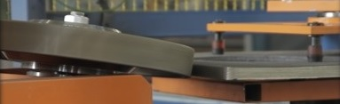
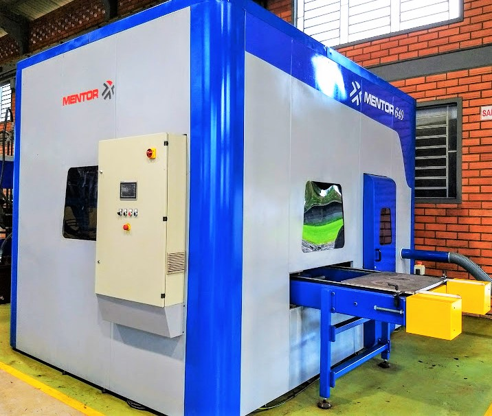
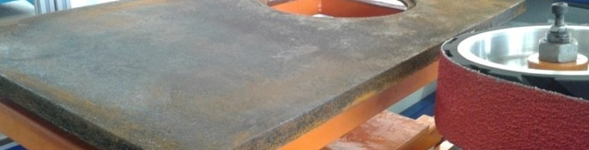

Máquinas de Rebarbação

A Mentor Automação oferece diversos tipos de equipamentos voltados à rebarbação, sendo divididas em rebarbação com rebolos e rebarbação com lixas.
Rebarbação com rebolo
|

|
Rebarbação de chapas planas
|
Retífica de cerâmica
- CNC de três eixos;
- Alimentação com mesa giratória;
- Leitura dinâmica da altura da superfície;
- Rebolo Diamantado NHP® desbaste;
- Produção de 26 peças/hora;
- Ganho de produtividade de 140%.
Veja essa máquina em funcionamento
|

|
Rebarbação com lixa

- Alimentação automática de chapas;
|
- Lixa com grande poder de remoção;
|
- Rebarbar a aba lateral da chapa;
|
- Seis modelos distintos de peças;
|
- Troca rápida modelos;
|
- Troca de modelos na IHM;
|
- Segurança e ergonomia;
|
- Qualidade no acabamento;
|
- Ganho de produtividade de 90%.
|